အက်ပ်အမည်: OffLink
ရည်ရွယ်အသုံးပြုသူ: တူညီသော WiFi ကွန်ရက်အတွင်း အုပ်စု အသံခေါ်ဆိုမှု ပြုလုပ်လိုသူများ
ရက်စွဲ: ၂၀၂၆ ခုနှစ် မတ်လ ၉ ရက်
နောက်ဆုံးအပ်ဒိတ်: ၂၀၂၆ ခုနှစ် ဧပြီလ ၁၁ ရက်
OffLink သည် တူညီသော WiFi / Tethering ပတ်ဝန်းကျင်တွင် အင်တာနက်မလိုဘဲ အုပ်စု အသံခေါ်ဆိုမှု ပြုလုပ်နိုင်သော အက်ပ်ဖြစ်ပါသည်။ WebRTC ၏ P2P ချိတ်ဆက်မှုဖြင့် နှောင့်နှေးမှုနည်းသော အသံခေါ်ဆိုမှုကို ဖြစ်မြောက်စေပါသည်။
အသုံးပြုခြင်း ဥပမာများ:
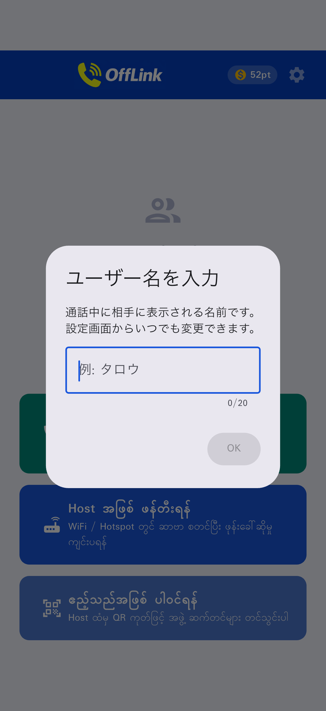
အက်ပ်ဖွင့်ပြီးချက်ချင်း ပင်မစာမျက်နှာ။
OffLink သည် WiFi LAN မုဒ် ဖြင့် အလုပ်လုပ်ပါသည်။ အားလုံး တူညီသော WiFi ကွန်ရက်သို့ ချိတ်ဆက်ပြီး ခေါ်ဆိုကြပါသည်။
အချက်: အင်တာနက်ချိတ်ဆက်မှု မလိုအပ်ပါ။
| အခန်းကဏ္ဍ | ထောက်ပံ့သော စက်ပစ္စည်း | ရှင်းလင်းချက် |
|---|---|---|
| အိမ်ရှင် | Android / iPhone | ခေါ်ဆိုမှုကို စီမံသော စက်ပစ္စည်း |
| ဧည့်သည် | Android / iPhone | ခေါ်ဆိုမှုတွင် ပါဝင်သော စက်ပစ္စည်း |
သတိပြုရန်: အားလုံး တူညီသော WiFi ကွန်ရက်သို့ ချိတ်ဆက်ထားရန် လိုအပ်ပါသည်။
| ခွင့်ပြုချက် | အသုံးပြုမှု | ငြင်းပယ်ပါက အကျိုးသက်ရောက်မှု |
|---|---|---|
| မိုက်ခရိုဖုန်း | အသံခေါ်ဆိုမှု | ခေါ်ဆို၍မရ |
| ကင်မရာ | QR ကုဒ် စကင်ဖတ်ခြင်း | QR ဖြင့် အုပ်စုမှတ်ပုံတင်၍မရ |
| အနီးရှိ စက်ပစ္စည်းများ (WiFi) ※Android | WiFi ကွန်ရက် ရှာဖွေမှု | အိမ်ရှင်ကို ရှာဖွေ၍မရ |
| တည်နေရာ ※Android | WiFi စကင် (OS လိုအပ်ချက်) | WiFi SSID ရယူ၍မရ |
| Bluetooth ※Android | နားကြပ် ချိတ်ဆက်မှု | နားကြပ် အသုံးပြု၍မရ |
| အကြောင်းကြားချက် ※Android | ခေါ်ဆိုမှု ဖိတ်ကြား အကြောင်းကြားချက် | နောက်ခံ အကြောင်းကြားချက် မရှိ |
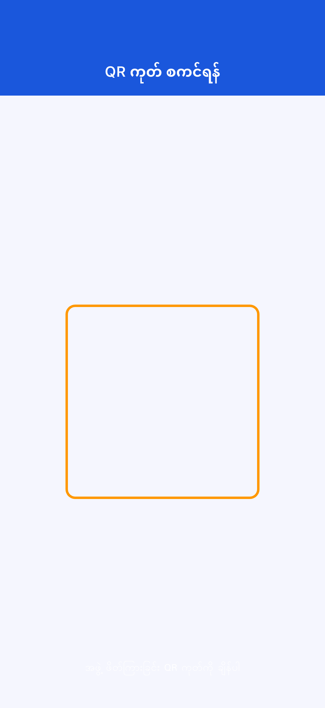
ခွင့်ပြုချက်ကို ငြင်းပယ်ပါက: "ဆက်တင်" → "အက်ပ်များ" → "OffLink" မှ ပြောင်းလဲပါ။
အဆင့် 1: အားလုံး တူညီသော WiFi သို့ ချိတ်ဆက်ပါ
အဆင့် 2: "ယခုခေါ်ဆိုပါ" (အစိမ်းရောင် ခလုတ်) ကို နှိပ်ပါ
အဆင့် 3: အသုံးပြုသူအမည် ရိုက်ထည့်ပါ
အဆင့် 4: အဆင့်ကို ရွေးပြီး ခေါ်ဆိုမှု စတင်ပါ
အဆင့် 5: အဖွဲ့ဝင်များထံ ခေါ်ဆိုမှု ဖိတ်ကြားချက် အလိုအလျောက် ပေးပို့မည်
အဆင့် 1: "အိမ်ရှင်အဖြစ် ဖန်တီးပါ" (အပြာရောင် ခလုတ်) ကို နှိပ်ပါ
အဆင့် 2: အုပ်စုအမည်နှင့် စကားဝှက် ရိုက်ထည့်ပြီး "ဖန်တီးပါ" နှိပ်ပါ

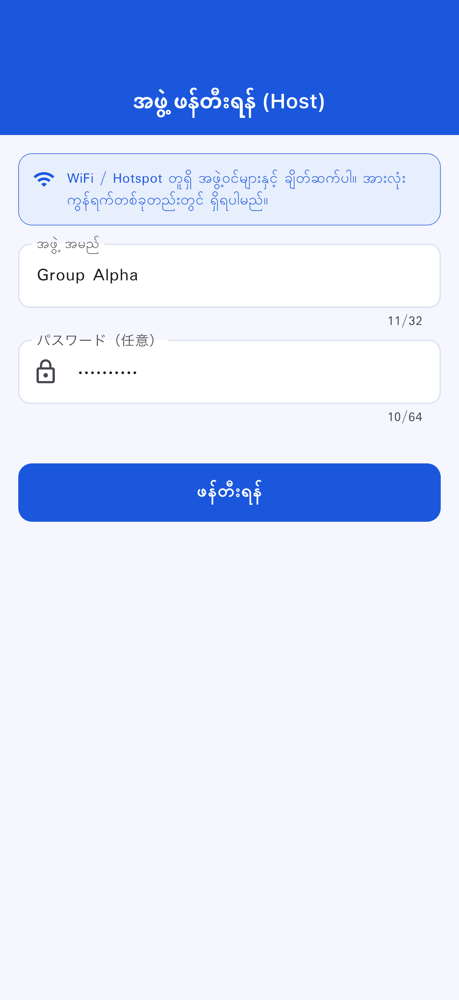
အဆင့် 3: ဖန်တီးမှု လုပ်ဆောင်ချက်ကို ရွေးပါ
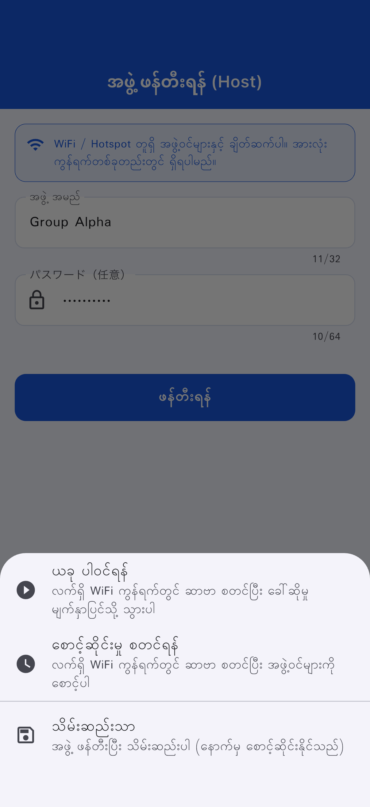
| လုပ်ဆောင်ချက် | ရှင်းလင်းချက် |
|---|---|
| ယခုပါဝင်ပါ | ဆာဗာ စတင်ပြီး ခေါ်ဆိုမှု စတင်ပါ |
| စောင့်ဆိုင်းမှု စတင်ပါ | ဆာဗာ စတင်ပြီး စောင့်ဆိုင်းပါ |
| သိမ်းဆည်းသာ | နောက်မှ စတင်နိုင်ပါသည် |
အဆင့် 1: "ဧည့်သည်အဖြစ် ပါဝင်ပါ" (အပြာနုရောင် ခလုတ်) ကို နှိပ်ပါ
အဆင့် 2: ပါဝင်ရန် နည်းလမ်းကို ရွေးပါ
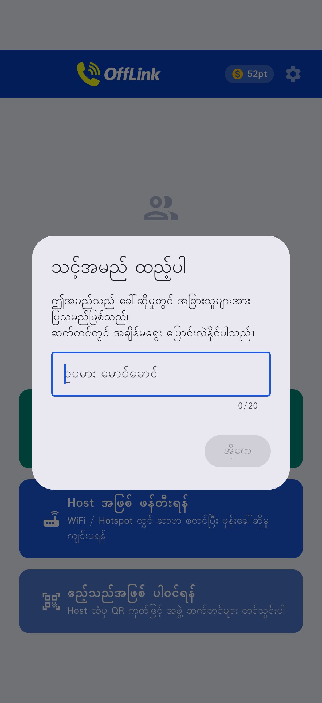
| နည်းလမ်း | လုပ်ဆောင်ချက် |
|---|---|
| 📱 QR ကုဒ် စကင်ဖတ်ပါ | အိမ်ရှင်၏ QR ကို ဖတ်ပါ |
| 📋 ကုဒ် ကူးထည့်ပါ | မျှဝေထားသော ကုဒ်ကို ကူးထည့်ပါ |
| ✏️ ကိုယ်တိုင်ရိုက်ထည့်ပါ | တိုက်ရိုက် ရိုက်ထည့်ပါ |
QR ကုဒ် မျှဝေခြင်း (အိမ်ရှင်ဘက်):
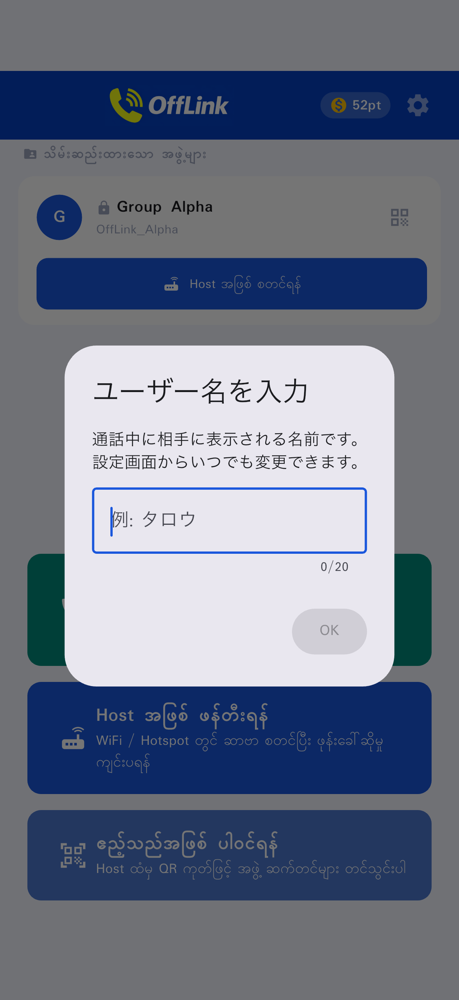
ကုဒ် ကူးထည့်ခြင်း (ဧည့်သည်ဘက်):
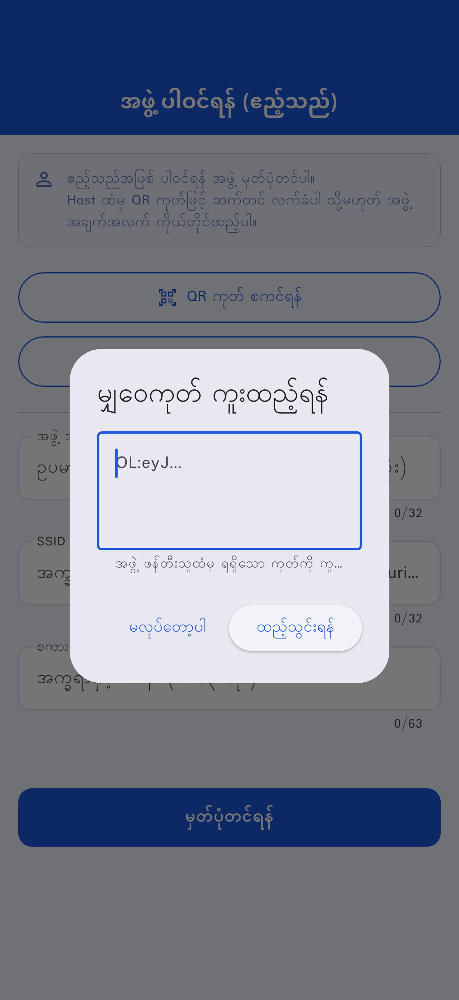
အဆင့် 3: "မှတ်ပုံတင်ပါ" ကို နှိပ်ပါ
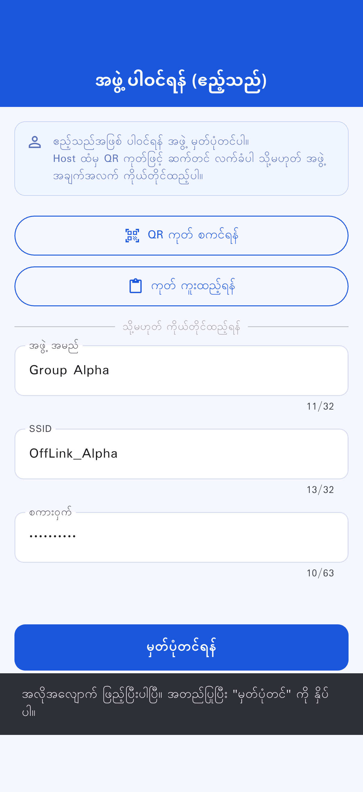
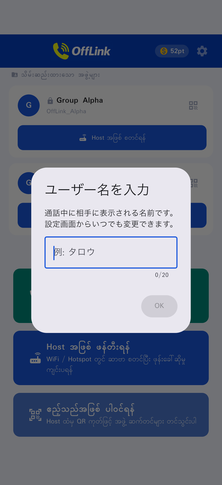
ဧည့်သည် ပါဝင်ရန် စာမျက်နှာ:
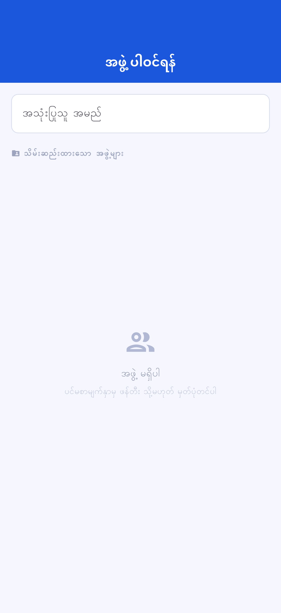
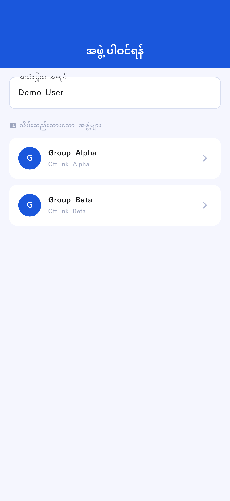
စောင့်ဆိုင်းမှု စာမျက်နှာ:
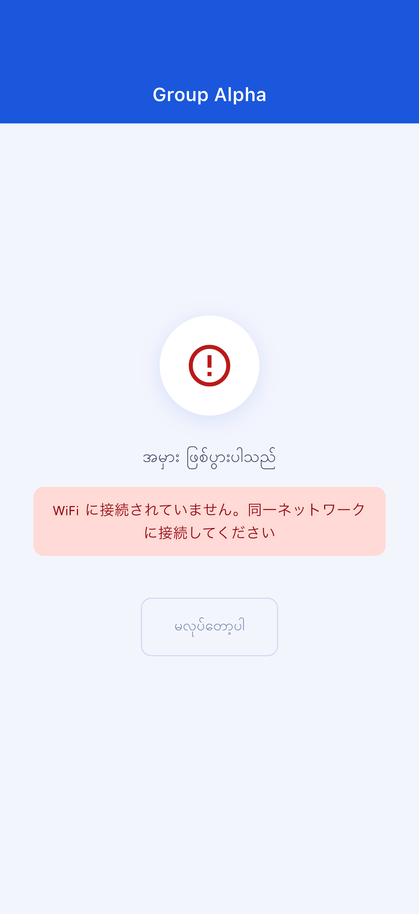
ခေါ်ဆိုမှု စာမျက်နှာ:
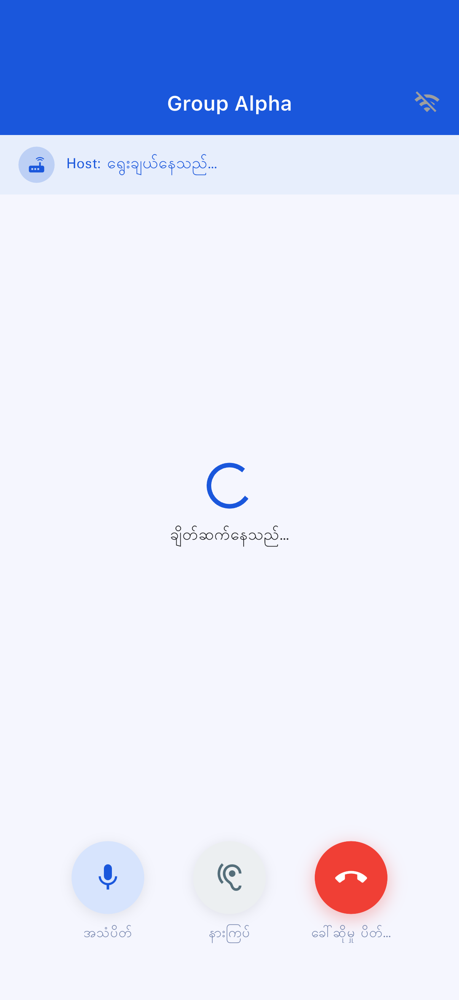
| ခလုတ် | လုပ်ဆောင်ချက် |
|---|---|
| 🎤 အသံပိတ် | မိုက်ခရိုဖုန်း ဖွင့်/ပိတ် |
| 🔊 အသံထွက် ပြောင်းခြင်း | စပီကာ / Bluetooth / နားကြပ် |
| 🔴 ခေါ်ဆိုမှု အဆုံးသတ် | ခေါ်ဆိုမှုမှ ထွက်ခွာခြင်း |
| အဆင့် | သုံးစွဲသော အမှတ် | အများဆုံး ပါဝင်သူ |
|---|---|---|
| Standard | 10 pt | ၄ ဦး |
| Large | 20 pt | ၁၀ ဦး |
OffLink အတွင်းမှ အလိုအလျောက် ဖွင့်၍မရပါ။ ကိုယ်တိုင် ဆက်တင်ပြုလုပ်ပါ။
"ဆက်တင်" → "အက်ပ်များ" → "OffLink" → "ခွင့်ပြုချက်များ" မှ ပြောင်းလဲပါ
| အကြောင်းအရာ | ကန့်သတ်ချက် အသေးစိတ် |
|---|---|
| အများဆုံး ပါဝင်သူ | Standard: 4 / Large: 10 |
| ခေါ်ဆိုမှု နည်းလမ်း | WiFi LAN သာ |
| နောက်ခံ | စက်ပစ္စည်းပေါ် မူတည်ပြီး ကန့်သတ်ချက်ရှိ |
| အုပ်စု သိမ်းဆည်းမှု ကန့်သတ်ချက် | Free: 5 / Premium: အကန့်အသတ်မရှိ |
| အကြောင်းအရာ | အကြံပြု |
|---|---|
| Android | 5.0+ (API 21+) |
| iOS | 13.0+ |
| ဘက်ထရီ | ၈၀% အထက် အကြံပြု |
| သိုလှောင်မှု | 100MB အထက် |
| WiFi | ရောက်တာ / Tethering / အိတ်ဆောင် WiFi |